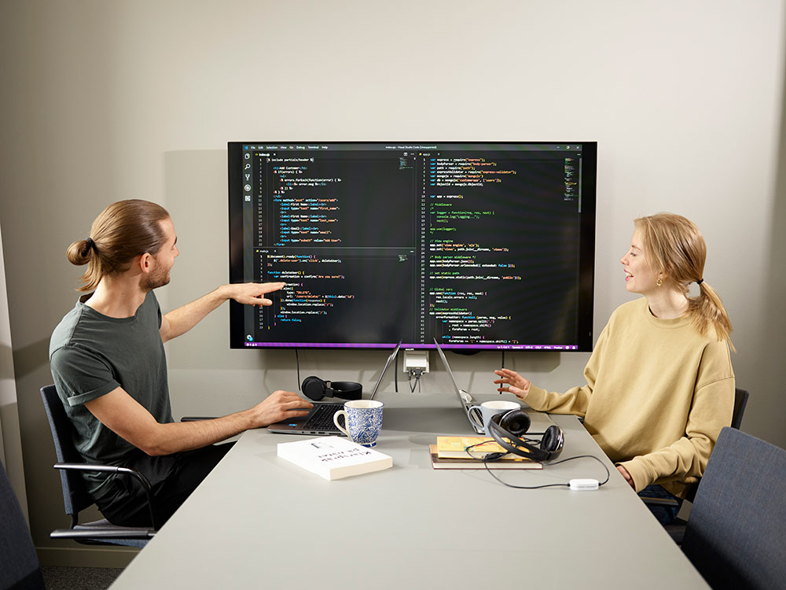

Webbutveckling är en het bransch som fortsätter att växa. Med Mittuniversitetets utbildning Webbutveckling i bagaget har du på bara två år lagt grunden för en framgångsrik framtid. Utbildningen riktar sig till dig som har ett intresse för datorer och teknik. Efter studierna kan du arbeta med utveckling, administration och drift av moderna webbplatser. Utbildningen fokuserar på teoretiska och praktiska färdigheter och har stor tyngdpunkt på webbutveckling med moderna hjälpmedel och språk. På kort tid förbereds du för att arbeta med webbutveckling i ditt yrke. Utbildningen ges på distans.

Om utbildningen
E-handeln i Sverige växer som aldrig förr och framtidstron är stark bland både e-handelsföretagen och dess konsumenter. Framgångsrika webbplatser skapas genom att användaren sätts i centrum i utvecklingsprocessen. Det är viktigt att ta hänsyn till hur gränssnittet mellan användaren av en e-tjänst och tekniken som får den att fungera ska utformas.
Under utbildningen får du lära dig viktiga delar inom webbanvändbarhet som stöd till den gedigna teknikkunskap du får för att utveckla och administrera framtidens webbplatser och funktionalitet. Det kommer att bli allt viktigare inom webbutvecklingen att kunna ta hänsyn till flera olika accesstekniker genom både fasta och mobila bredbandsuppkopplingar. En trend är också att fler kombinerar och integrerar flera olika former av teknik och funktionalitet på webbplatsen.
Utbildningen är skräddarsydd för att ge dig alla verktyg som krävs för att arbeta med webbutveckling. Du kommer att lära dig teknikerna bakom de nya trenderna med att skapa webbplatser som har användargenererat innehåll, exempelvis Wikipedia. Du får på kort tid kunskaper och lär dig arbeta med moderna ramverk och plattformar för utveckling och användande samt programmeringsspråken:
- HTML
- CSS
- JavaScript
- Node
- PHP
- C#
- ASP med .NET
Du får också skapa och konsumera webbtjänster samt lära dig att utveckla med webbaserade innehållssystem (CMS).
Flera av kurserna i utbildningen är projektkurser där du kommer att ingå i en grupp studenter med skilda kunskaper i modellering och implementering. Dessa projekt lär dig att använda dina egna färdigheter och att kommunicera effektivt med de andra i utvecklingsarbetet, kunskaper som efterfrågas av arbetsgivarna.

"Branschen bedöms växa med 20 procent närmsta åren och behovet av webbutvecklare är stort."
"Webbutveckling är den perfekta balansen mellan logik och kreativitet".
Marie Francesca Michl
Nästa underrubrik
Brödtext